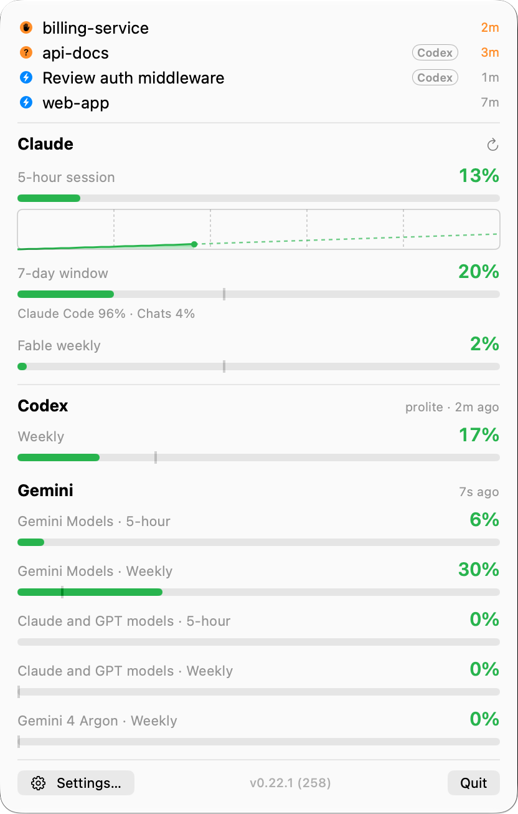

How much Claude do I have left?
A gauge in your macOS menubar for the 5‑hour and 7‑day rate limits on your Claude subscription — live, wherever you use Claude — with an alert before you hit the wall.
macOS 13+ · Apple Silicon · signed & notarised · free, MIT · for Claude Pro, Max and Ultra accounts — the ones Claude Code signs in with
What you see
The pill is the whole interface most of the time. It shifts from green through orange to red as a window fills, splits into bands when a second window gets tight, turns into a countdown at the cap, and grows a badge when status.claude.com reports an incident or a Claude Code session needs you.
- 42% 5‑hour session, plenty left
- 78% Filling up — and status.claude.com reports an incident
- 88%91% Both windows tight: 5‑hour │ 7‑day
- 93%61% Claude running hot, Codex has room
- 1:47:12 At the cap: a countdown to the reset — and a session needs permission
- 64% No 5‑hour limit: the weekly window leads — a session is working

-
Live 5‑hour, 7‑day and per‑model limits. The same numbers Claude's own Usage screen shows, polled about once a minute — every ten seconds as you near the cap. Connect your account to add the per‑model weekly window.
-
Alerts by pace, before 100%. A sound at the thresholds you pick, and a pill that can colour by burn rate instead of level — so a window you're racing through turns orange while there's still time to slow down.
-
Codex alongside. Optional: OpenAI Codex rate limits in the same pill and dropdown, read from the Codex CLI's local logs, so you can balance work between the two quotas.
-
Session status and an MCP server for agents. See which Claude Code sessions are working, waiting for input or need permission, right in the menubar. Turn on the read‑only
get_usagetool and your agents can check the remaining headroom before a large fan‑out.
Set up in three steps
- 1Open the
.dmgfrom the latest release, drag the app to Applications and launch it. A red triangle appears in the menubar: no token yet. - 2In a terminal, run
claude setup-tokenand copy thesk-ant-oat01-…value it prints. This token is long‑lived. - 3Click the triangle → Set a token…, paste, Save & Test. The gauge takes over. Optionally Connect Claude account for the per‑model weekly limit.
Privacy
The app polls api.anthropic.com over HTTPS with your token — about once a minute, every ten seconds when you're within 2% of the cap — reads the rate‑limit headers, and keeps the token in your macOS Keychain: never in a file, never logged. Besides that it asks status.claude.com for the public service status every five minutes and GitHub for the latest release once a day (that one can be switched off); neither request carries your token or any identifier. There is no telemetry and no analytics in the app. Usage history and session records stay under ~/Library/Application Support/cc-usage-stats/, the optional Codex reader works from ~/.codex, and the optional MCP server answers only the agent that launched it, over stdio.